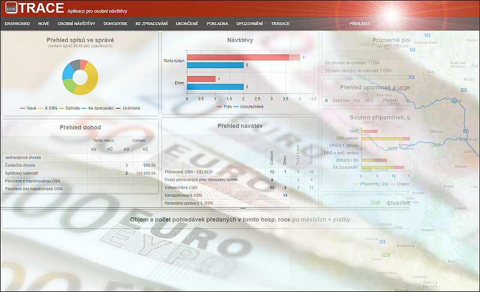

Aplikace TRACE Tablet
(verze 1.7.4.)
zjednodušená aplikace (oproti aplikaci TRACE), sloužící pro předávání informací mezi EOS a inkasními pracovníky přímo v terénu.

Tato aplikace umožňuje zpracovávat naplánované případy přímo v terénu i v případě, že nebude internetové spojení se serverem. Umožňuje mimo jiné předávání nových případů, získávání zpráv od inspektorů a zajištění přístupu inspektorů k aktuálním informacím. Zefektivnění zpracování agendy OSN jak na straně EOS, tak na straně inkasních inspektorů, dále pak možnost řízení práce inkasních inspektorů ze strany EOS, jejich kontrolu a přístup inspektorů k výsledkům své činnosti.
V aplikaci jsou použity funkcionality třetích stran (např. optimalizační knihovna společnosti Google).